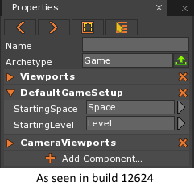

The GameSession Object
GameSession manages the running of the game, both upon pressing the play button and dealing with the exported version. It is an object that represents one instance of the game. Being an object, it is possible to create more than one game session per executable.
Common Uses
- Setting the starting
Level- Redirecting the use of
Esckey in game
Using the GameSession
The GameSession object may be accessed from the scripts that are running via any Cog:
// Within a script, those ``this`` variables referring to a Cog can get the GameSession
// Note: Even though they are not Cogs, all Components (to include derived ZilchComponents)
// are equipped with a getter to GameSession
var myGame = this.GameSession;
// Here is an example of pulling it from a dynamically created cog.
var cube = this.Space.Create(Archetype.Cube);
var alsoMyGame = cube.GameSession;
A GameSession in Zilch cannot be created using the a normal constructor. In order to create one one must use a function bound from C++:
// Here, a C++ function bound to Zilch is used to create a GameSession
var myGame = Zero.Engine.CreateGameSession();
Warning
This is primarily intended for having a project to launch a dedicated server; therefore, calling this puts the game in the background while still using resources. It must be managed by the user: this includes destroying the game, ensuring resources do not leak, and checking references of objects belonging to other GameSessions before using them to avoid exceptions or other corruption of data.
Being that all Zero Projects run a game, it can be edited within the editor. The hotkey Shift + g accesses the Game Archetype that is
used to spawn the game. By default it comes with the DefaultGameSetup component, which can be used to set the starting level or load a custom space archetype. From here one can also add custom-made components, just like any other object.

Properties and Methods of GameSession
- Properties: Code Reference
- Methods: Code Reference
Events of GameSession
The user connects to these events when dispatched on the GameSession, e.g.:
Zero.Connect(this.GameSession, Events.GameLoad, this.OnGameLoad);
| Event Name | Type | Description |
|---|---|---|
| GameSetup | GameEvent |
This event fires after the creation of the GameSession. Only GameSession will be to respond to this event due to the timing of the dispatch during normal circumstances. |
| GameLoad | GameEvent |
This event fires after the creation of the Space Archetype. Only GameSession and spaces will be able to respond to this event due to the timing of the dispatch in normal circumstances. |
| GameStarted | GameEvent |
This event fires after the starting level is fully loaded. All cogs present at
the start of level are able respond to this event. Dynamically created objects
may or may not respond depending on when they were created. (e.g. those created
during initialize of those objects loaded with the level will still receive this
event, but those created in response to the LogicUpdate event will not. |
| GameFocusIn | GameEvent |
This event fires once the game window has regained focus (having been out of
focus.) This event is not sent when testing in the editor. In order to test this
logic, run the game using the ExportAndPlayGame command. |
| GameFocusOut | GameEvent |
This event fires after the game window has lost focus, for instance when clicking
on another application. This event is not sent when testing in the editor. In
order to test this logic, run the game using the ExportAndPlayGame command. |
| GameRequestQuit | GameEvent |
This event fires after the pressing the Esc key. This allows a script to hook
the key in order to override this behavior. See
Handling the Quit Message for more on this. |